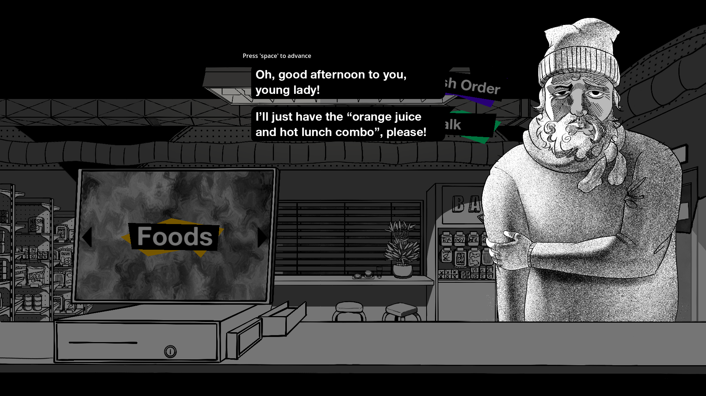
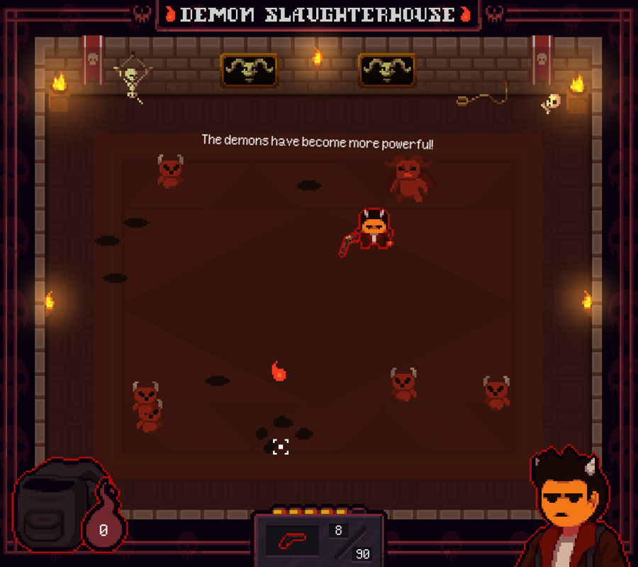
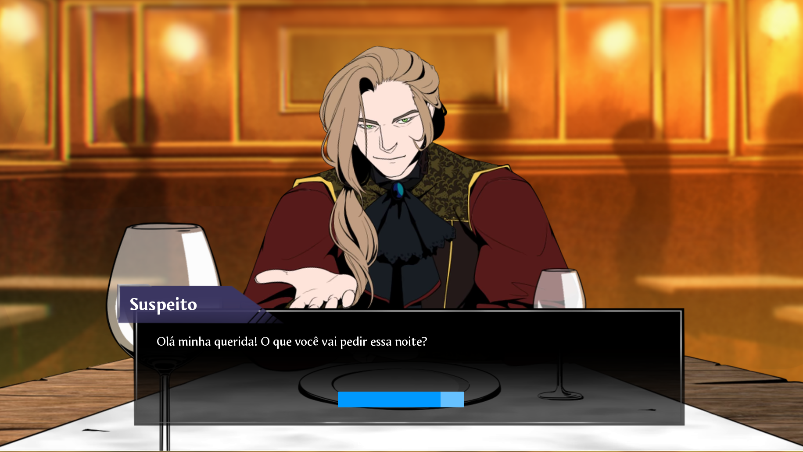

I’ve been doing game development since late 2022, even though previously involved in programming and music composition.
Here is some of my work!
Game Jams
I started participating in game jam in order to gain experience as a developer and mainly because I love working with other people.
Here are some of the games I’ve developed during them:
WALLFLOWER
WALLFLOWER is a job simulator / visual novel where you play as the tired and quiet stationary cashier of a convenience store.
During your shift, you will need to do your job ringing up items while enduring strange customers if needed, and doing other tasks that you may or may not have signed up for. But why should you care about that?
You need the money. You have to get this money no matter what. You need to. You have to.

In this project, I conceptualized the main idea, directed and organized the team and programmed everything.
My main goal with this game was to convey the feeling of helplessness of being stuck in a bad situation without perspective of getting better. My main difficult was to align the team into an unique vision in order to convey what I meant to.
Devil’s Corp
A pixel art top-down shooter! You get to be Alister, a badass shinigami with a killer job - hunting and delivering demonic souls to the one and only Devil himself.

This project was my first time working with a professional team back in 2023, my time with Astro Cat was very important since I learned how to manage a team and organize myself properly.
I composed every song but one (opening cutscene). This was a ‘Ludum Dare 53’ submission scoring 4/5 in audio.
Intrusion
A science fiction visual novel in which you take the role of an investigator in a reality where everything has to be done quickly.
In your job, you need to get inside the minds of suspects to reveal their secrets and find out whether they are guilty or innocent.
But beware, hasty judgments can have drastic consequences, as can taking too long to make decisions.

In this game I was the only programmer and sound designer, the project is very simple since it was made using Ren’Py.
The most difficult part was to export the game with animated characters for web using Ren’Py. I’ve achieved this by using a video with a side mask that is used as the alpha channel.
LimbPunk
Mess around in this 2D cyberpunk platformer where you must sacrifice your body to carry on!
Every part of your body holds a purpose. Not having them also does. Control a ciborgue in this grotesque adventure and remove parts of your body at the right time so you can reach your final goal!
You can cut your body whenever and however you see fit, but once you lose something, you may not have it back for the remainder of the phase.

This game is very far from great but it was my first experience in a Jam!
It was developed in 48h by a team of newbies at Maritacas Gamedev, a gamedev group from University of São Carlos.
There were no clear roles, but I did all of the audio and some of animations and spritework.
Extra
Crosswords++
A fullstack crosswords game made in C++ with SDL2 and PostgreSQL. Developed as an assigment for an university class.